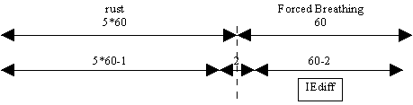
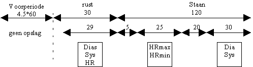
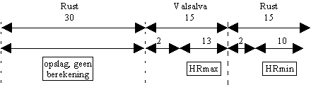
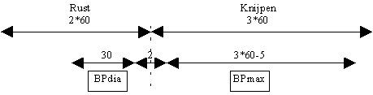
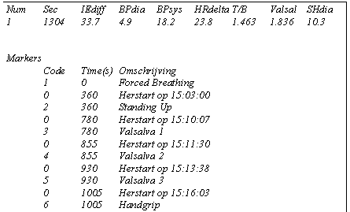

RF 2, Onset Systolische Bloeddruk
|
Deze funktie (analyse autonome neuropathie) behoort bij funktie 14 (opname autonome neuropathie).
Bijzonderheden
Deze funktie is ontwikkeld voor een specifiek doel. Gebruik deze funktie nooit zonder voorafgaand overleg met de Instrumentele Dienst. De funktie kan namelijk worden gewijzigd zonder een opwaartse compatibiliteit te garanderen.
Inputs
Outputs
De outputs van deze funktie zijn na het doorlopen van het gehele bestand gelijk aan:
De waarde zijn allen vermenigvuldigd met een individuele factor om voldoende nauwkerigheid te verkrijgen.Tijdens de berekeningen zijn de outputs anders gedefiniëerd, teneinde het rekenalgoritme te kunnen controleren.Parameters
geen
Forced BreathingDe gehele test duurt 6 minuten en wordt liggend uitgevoerd. Eerst 5 minuten rust, daarna gedurende 1 minuut geforceerd in-/uitademen (6 keer).De berekening wordt geinitiëerd door marker F1.De ademhaling wordt afgeleid uit het impedantie signaal, stijging=inspiratie en daling=expiratie. Voor de hartrate wordt gebruik gemaakt van het RR-interval.Tijdens de inpiratie wordt de maximale hartfrequentie bepaald en gedurende de expiratie de minimale hartfrequentie. Per respiratie wordt het verschil tussen maximale en minimale hartfrequentie (I-E-difference) bepaald. De uiteindelijke waarde wordt verkregen door de I-E-difference over de 6 respiraties te middelen.Omdat de gehele test liggend wordt uitgevoerd, zullen er weinig bewegings-artefacten zijn, daarom wordt slechts 1 seconde aan begin en einde van de werkelijke rekenperiode verwijderd.
|
|
 |
Tijdens de berekeningen zijn de outputs als volgt gedefiniëerd:
Standing UpDe gehele test duurt 7 minuten. Na 5 minuten liggende rust, binnen 3 seconde tot staan komen en gedurende 2 minuten staan. De eerste 4.5 minuten van de test wordt niet opgeslagen.De berekening wordt geinitiëerd door marker F2.Voor de bloeddruk wordt gebruik gemaakt van diastolische en systolische bloeddruk.Voor de hartrate wordt gebruik gemaakt van het RR-interval.
|
|
 |
De volgende parameters worden berekend:2 = BPdia = Gemiddelde Diastole(rust) - gemiddelde Diastole(50..80 sec)3 = BPsys = Gemiddelde Systole(rust) - gemiddelde systole(50..80 sec)4 = HRdelta = HRmax(5..30 sec) - HR(rust)5 = T/B ratio = HRmax(5..30) / HRmin(5..30)Tijdens de berekeningen zijn de relevante outputs als volgt gedefiniëerd:
Valsalva
Deze test wordt in drievoud uitgevoerd. Door middel van de markers F3, F4 en F5 worden de verschillende Valsalva-tests uit elkaar gehouden. Iedere Valsalva test duurt 75 seconde. Het opgenomen deel is wat korter gehouden dan de testduur. Tijdens de test wordt alleen gekeken naar de hartrate, afgeleid uit RR-interval.
|
|
 |
Van iedere Valsalva manoeuvre wordt de verhouding HRmax(Valsalva) / HRmin (rust-na) berekend. Van de 3 Valsalva metingen wordt uiteindelijk de hoogste Valsava Ratio geëxporteerd (output 6).
Tijdens de berekeningen zijn de relevante outputs als volgt gedefiniëerd:
Sustained Handgrip
Deze test duurt in totaal 5 minuten. Gedurende 2 minuten rust, daarna gedurende 3 minuten op 30% maximale kracht knijpen.
|
|
 |
Berekend wordt het verschil tussen maximale diastolische bloeddruk tijdens knijpen en de gemiddelde diastolische bloeddruk tijdens de laatste 30 seconde van de rust. Voor de bepaling van de maximaal diastolische bloeddruk wordt het signaal over 5 seconden gemiddeld.De volgende parameters worden berekend:7 = SHdia = MaxDiastole(knijpen) - gemiddelde Diastole(rust)
Tijdens de berekeningen zijn de relevante outputs als volgt gedefiniëerd:
|
|
 |
© Instrumentele Dienst. Bijgewerkt op 8-12-1999.